Хитрощі, а не відповіді
Кожен світ — один прийом: два вказівники, ковзне вікно, хеш-мапа, графи, DP. Підвідні вправи ведуть до справжньої задачі.
Усе, що не потрапило на головну: анімації героїв, вишиванка-прогрес, Кришталева Писанка, карта екранів, UI-кіт, онбординг на 14 сцен, айдентика, іконка, голос гри, трейлер і музика.
Чотири стани для кожного героя: стоїть, іде, діє, говорить. Кожна клітинка — справжні кадри з гри.
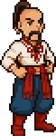
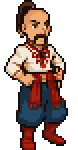
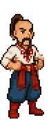
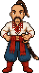
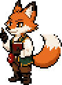
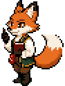
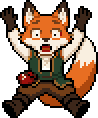
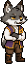
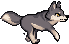
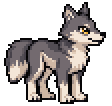
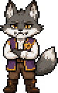
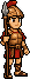
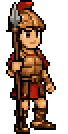
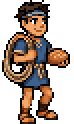
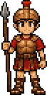
Чиста сорочка на старті, перші візерунки після Карфагену, повністю вишита у фіналі. Сорочкою можна поділитися як резюме.
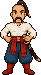
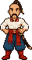
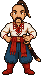
Тримає світи української літератури в ладу. Шторм Еола розбив її, і кожен уламок несе один візерунок, тобто одну хитрість.
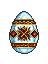
Вісім екранів і переходи між ними. Жовтий квадратик пробігає основний шлях: заставка, меню, мапа, рівень, суд богів і назад на мапу. Новий гравець у меню обирає рівень: з нуля — Абетка, трохи — світ 0, хочу задач — світ 1.
Кнопки, вкладки, мітки, рядки тестів, репліки персонажів, сповіщення і тема редактора «Mykyta Dark».
МикитаОце по-лисячому! Вовк ще рахує пари.
СивіллаА що, як іти з обох кінців одночасно?
ЮнонаМій шторм ще не скінчився, а ти вже видихся.
ВовкЯ перевірю всі пари. Всі-всі.
// два вказівники while (left < right) { const h = Math.min(a[left], a[right]); best = Math.max(best, h * (right - left)); }
Сцени 1–10 — заставка приблизно на дві хвилини, яку можна пропустити. З одинадцятої гравець пише код. Хто починає з нуля, бачить ще пролог «Абетка»: «Ніч перед бурею» після сцени 6 і «Заграву» перед сценою 7. Гортайте текст праворуч (смуга прокрутки збоку) або натискайте крапки.
A · Голова Енея з оселедцем { поруч із назвою. Основний варіант.
B · Крапки над «ї» стали двома уламками Писанки: червоним і лисячим.
C · Монограма в формі писанки для іконки застосунку.
Кришталева Писанка на нічному тлі з оселедцем-дужкою зліва. Заставка показує поради Сивілли, поки вантажиться застосунок.
Бурлеск Котляревського та іронія Франка. Сміємося з Юнони і Вовка, ніколи з гравця.
Оце по-лисячому! Вовк ще рахує пари, а ми вже пливемо далі.
Так розв'язав би Вовк Неситий: O(n²). Пошукай хитрість.
Ха! Мій шторм ще не скінчився, а ти вже видихся.
Еней спіткнувся на рядку 12: змінна right не оголошена.
А що, як іти з обох кінців одночасно?
На вишиванці Енея з'явилися «два зустрічні ромби».
Ролики збирає код, як і спрайти. Героїв і світи малює той самий рушій, що й гру, а музику синтезує скрипт. Кожна склейка падає точно в долю.
150 ударів на хвилину: такт — 1,6 с, або 48 кадрів. Сцени тривають ціле число тактів, тож склейки збігаються з ударами.
Чіптюн у ре гармонічному мінорі: Dm – B♭ – C – A. Квадратна хвиля з вібрато, бас октавами, арпеджіо, шум замість тарілок.
Спрайти, світи й частинки малює той самий site/app.js. Ролик не розійдеться з грою.
Білий спалах на дропі, косий мазок кольору наступної сцени на склейці, легка тряска на ударі.
Кадри гри пише скрипт зі справжньої гри у 2560×1600: задача Дидони, мапа, Абетка, інтро.
Головне — у центральних 3:4, низ і права смуга вільні під інтерфейс. Перший кадр і є обкладинкою.
34 такти по 1,6 с. Світле — тихі секції, яскраве — дропи з повним бітом.
Арт малюється кодом, тож кожне покращення одразу проходить крізь усіх героїв і всі світи. Потягни повзунок, щоб порівняти, як було і як стало.
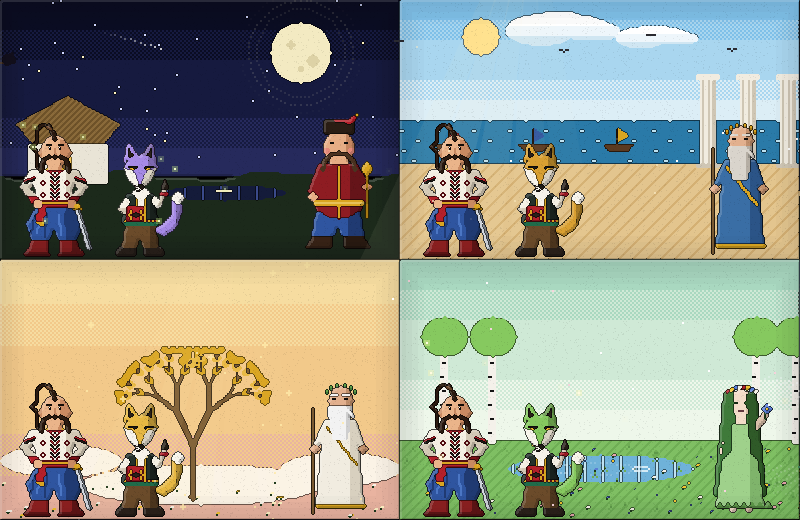
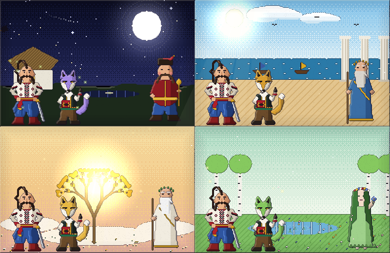
ДоПісля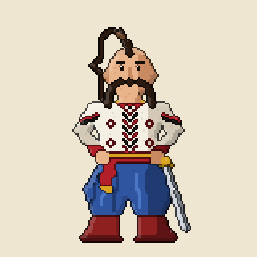
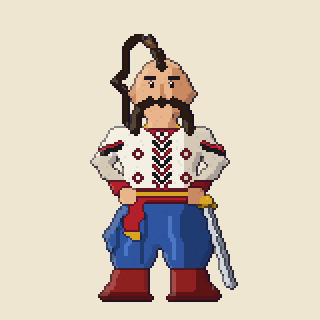
Світло тепліє до кремового, тінь холоднішає до фіолетового, а не просто біліє чи чорніє.
Зі світлого боку контур м'якший, з тіньового — глибокий.
Піксельні кільця з кроком 2 px, без розмиття: сонця, місяць, вогнища, кузня.
Дизеринг Байєра замість смуг, мерехтливі зірки, хода на 4 кадри.
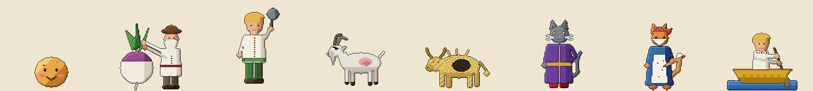
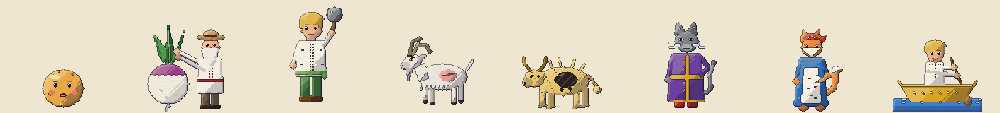
ДоПісляДо редизайну героїв і Писанку малював код гри піксель за пікселем. Так вони виглядали у версіях 0.1–0.4.
Персонажів і фони перемалювали в PixelLab: низька роздільність, ×2 у сцені, чіткі обличчя. Далі — усе, що є в грі: ракурси, стани, портрети, анімації, фони й відкинуті варіанти.
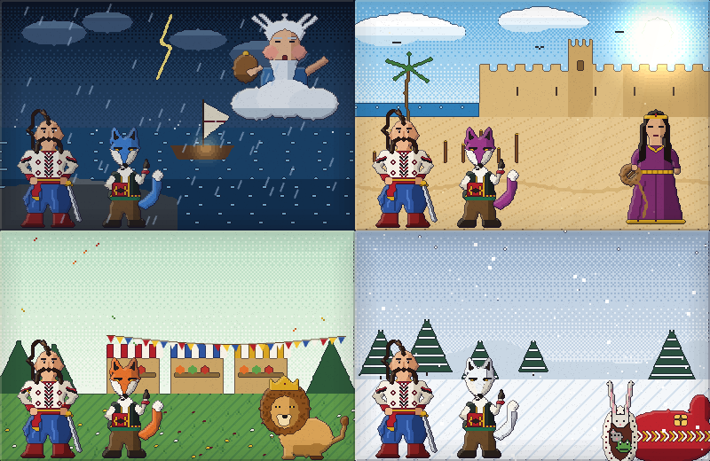
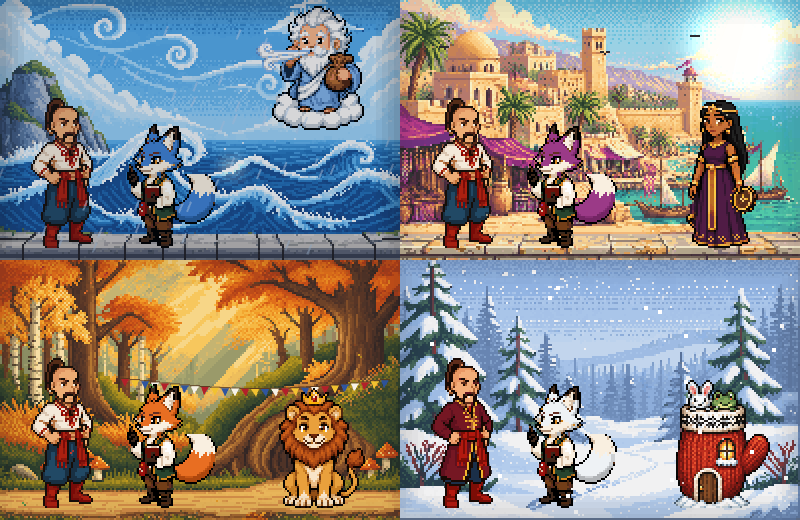
ДоПісля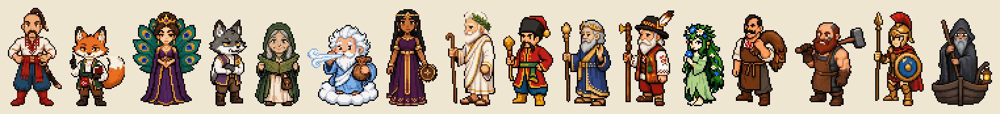
Обери героя: він обертається, як на гончарному крузі.
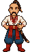
Хода й стрибок — skeleton-v3; бенкет, вітер і Вовк — покадрово.
Хутро перефарбовується в коді: тон змінюється, тіні й відблиски лишаються.


Фони 200×130 у грі збільшуються ×2–×3. Поверх кожного кодом намальовано живі ефекти: сяйво, воду, дим, зорі, сніг.
Потягни повзунок, щоб порівняти.